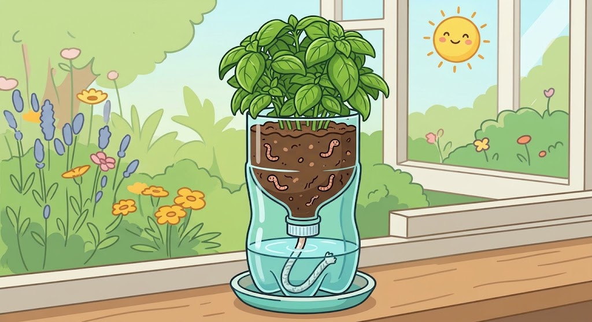
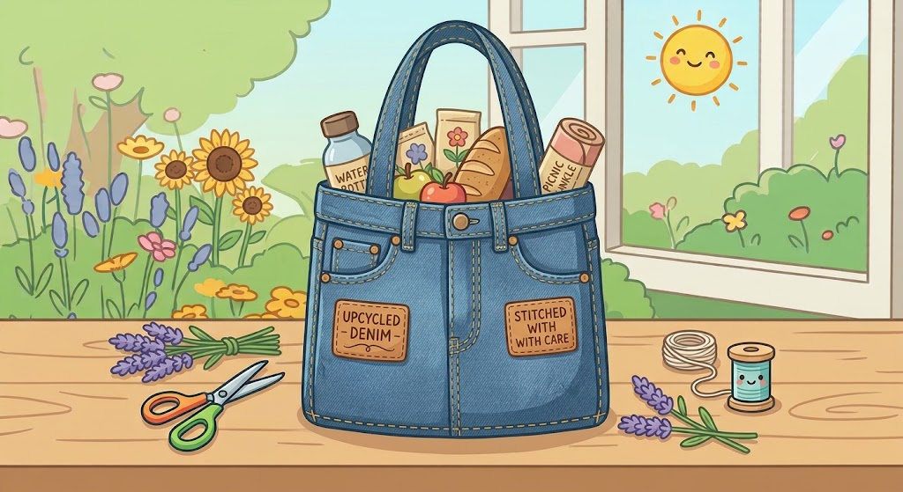
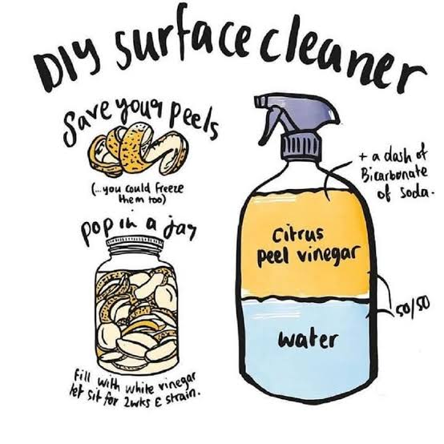
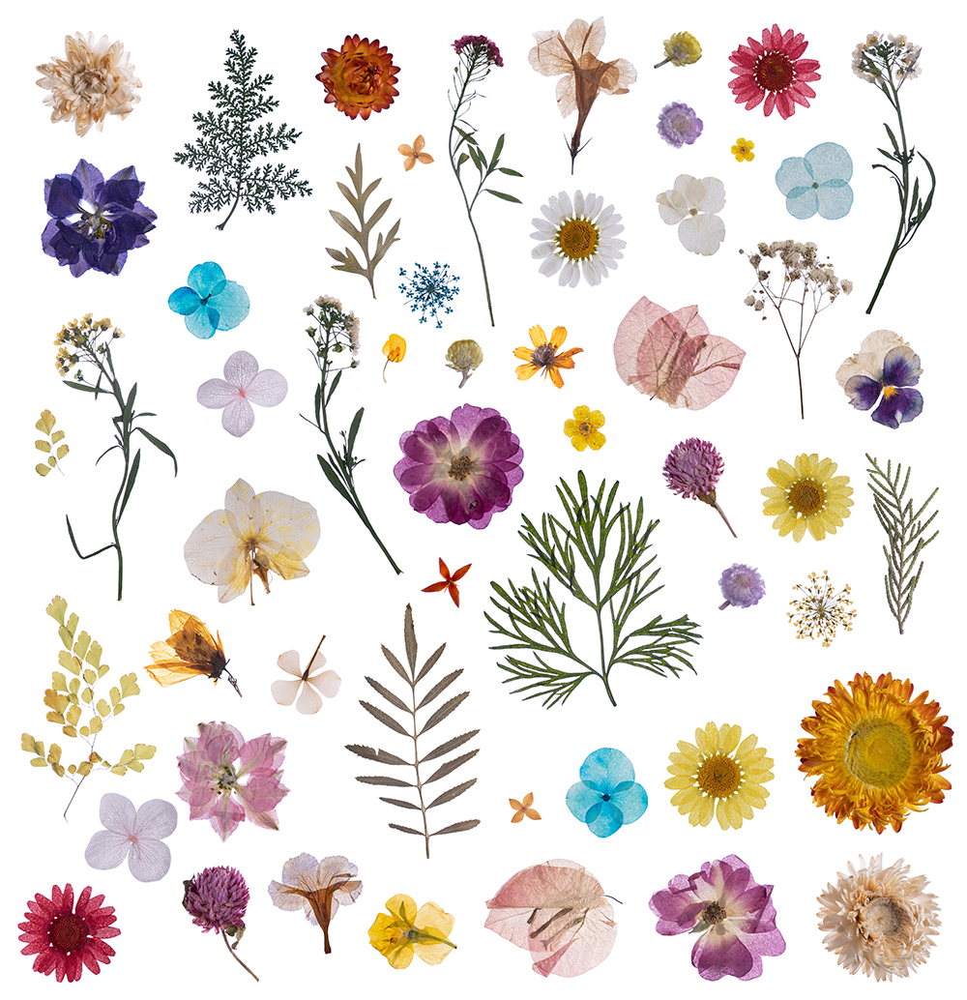
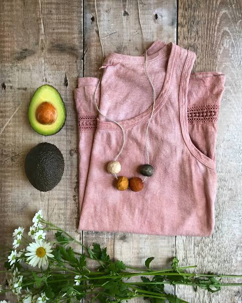

Upcycling & Repurposing

1. Plastic Bottle Self-Watering Planters
- Cut and Prep the Bottle: Take a clean plastic 2-liter bottle. Cut it in half roughly 4 inches below the bottle cap[cite: 7].
- Set Up the Wick: Unscrew the cap, poke a small hole in the center, and pull a 6-inch cotton string (or cotton fabric strip) through. Tie a knot inside the cap so the string doesn't slip all the way through, leaving a few inches dangling down. Screw the cap back on[cite: 7].
- Assemble the Reservoir: Pour 2–3 inches of water into the bottom half of the bottle. Flip the top cap-side down and rest it inside the bottom half so the string dangles into the water[cite: 7].
- Add Soil and Plant: Fill the top section with potting soil while keeping the string pulled up into the soil core. Plant your seeds or small herbs, then water lightly from above for the first time[cite: 7].

2. Denim Tote Bags
- Cut the Legs Off: Lay your jeans flat and cut straight across both legs 2 to 3 inches below the back pockets[cite: 1].
- Create Straps: Cut long, wide strips from the leftover pant legs to serve as your bag straps[cite: 1].
- Stitch the Bottom: Turn the jeans inside out. Sew or glue along the open bottom hem with fabric glue or heavy-duty thread[cite: 1].
- Attach Handles: Flip the jeans right side out, attach your fabric handles securely to the waistband, and your upcycled denim tote bag is ready[cite: 1]!

3. T-Shirt / No-Sew Tote Bags
- Cut the Sleeves and Collar: Take an old cotton T-shirt and neatly cut off both sleeves and the collar opening to form the bag opening and shoulder straps.
- Determine Bag Depth: Decide how deep you want your bag to be and cut straight across the bottom hem if necessary, or leave extra length for fringe.
- Create Fringe Ties: Cut matching vertical slits (about 2–3 inches long) up from the bottom edge through both the front and back layers of the shirt.
- Tie and Secure: Tie each front fringe strip securely in a double knot with its corresponding back fringe strip across the entire bottom to seal it completely.

4. Zero-Waste Citrus & Vinegar All-Purpose Cleaner
- Save peels from oranges, lemons, or limes in a glass jar until full[cite: 1].
- Pour plain white vinegar over the peels until fully submerged. Seal the lid and store in a cool, dark cupboard for 2–3 weeks[cite: 1].
- Strain out the peels through a mesh sieve. Pour equal parts of the infused vinegar and tap water into a spray bottle[cite: 1].
- Use on countertops, sinks, and glass. (Note: Avoid using vinegar on natural stone like granite or marble)[cite: 1].

5. Pressed Leaf and Flower Art
- Gather & Dry: Collect flat blooms in the afternoon (moisture can cause mold while pressing)[cite: 1].
- Book Pressing: Place flowers between two pieces of parchment paper inside a heavy book. Stack extra books on top and leave undisturbed for 7–10 days[cite: 1].
- Arrange & Mount: Carefully peel the dried flowers off the paper using tweezers. Arrange them on cardstock or watercolor paper using micro-dabs of craft glue[cite: 1].
- Frame: Display in a glass picture frame or floating frame out of direct sunlight to prevent fading[cite: 1].

6. Avocado Pit Pink Dye (Natural Fabric Dye)
- Clean & Simmer: Wash 4–5 pits (reserve fruit residue). Place in a pot with 4 cups of water and bring to a simmer[cite: 1].
- Extract Color: Simmer until water turns a rich ruby pink, then strain out the pits[cite: 1].
- Dye Fabric: Submerge small 100% natural cotton items (like a tote bag or cloth) in the dye bath. Let soak from 5–10 minutes up to overnight for a darker shade[cite: 1].
- Rinse & Dry: Rinse in cold water until it runs clear, then hang to air dry in the shade[cite: 1].